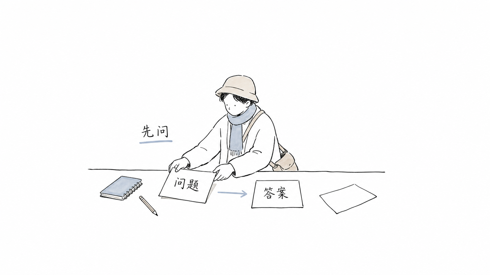
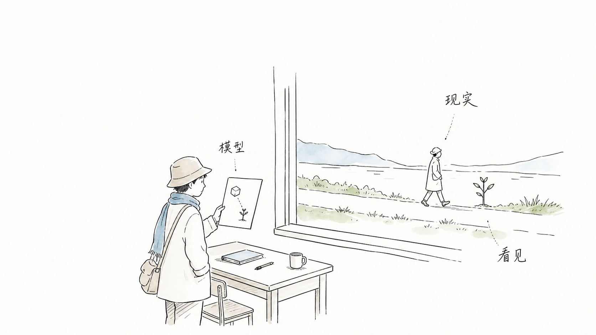
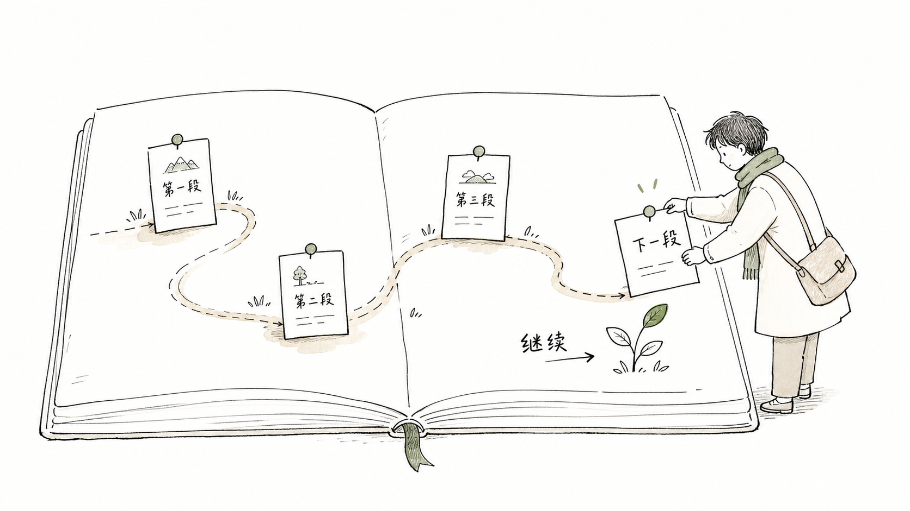

什么问题值得被提出？
速度可以优化答案，却不能替我们决定问题的价值。
一份持续生长的思考资料库
这里收录关于 AI、知识、意识、判断与人的课件。我们不急着给“人类的未来”下结论，先把那些经常被跳过的中间问题重新摆回桌面。

它更像是一张慢一点的桌面：让我们看见问题从哪里来，答案经过了什么，又是谁要承担答案落地之后的结果。
速度可以优化答案，却不能替我们决定问题的价值。
可生成、可引用、可计算，不自动等于可靠。
选择会改变谁的生活，责任就不能只留在模型之外。
工具越强，越需要重新练习自己的尺度、边界和行动。
每个课件都保留自己的入口、上下文与资源。未来新增内容会沿着同一套目录继续生长。
三份课件先从“问题”开始，再经过“人与模型的关系”，最后落到“判断与责任”。它们可以单独阅读，也可以按顺序走完。

课件不是答案仓库。读完之后，建议带走一个仍然愿意追问的问题，或者一条准备在现实中试用的边界。
先辨认自己正在接受什么前提。
把模糊的直觉变成可以检查的句子。
问它会怎样影响一个具体的人。

新增课件、案例、读书笔记或讨论材料，都可以作为一条新的路径接入。目录负责保持秩序，问题负责保持开放。